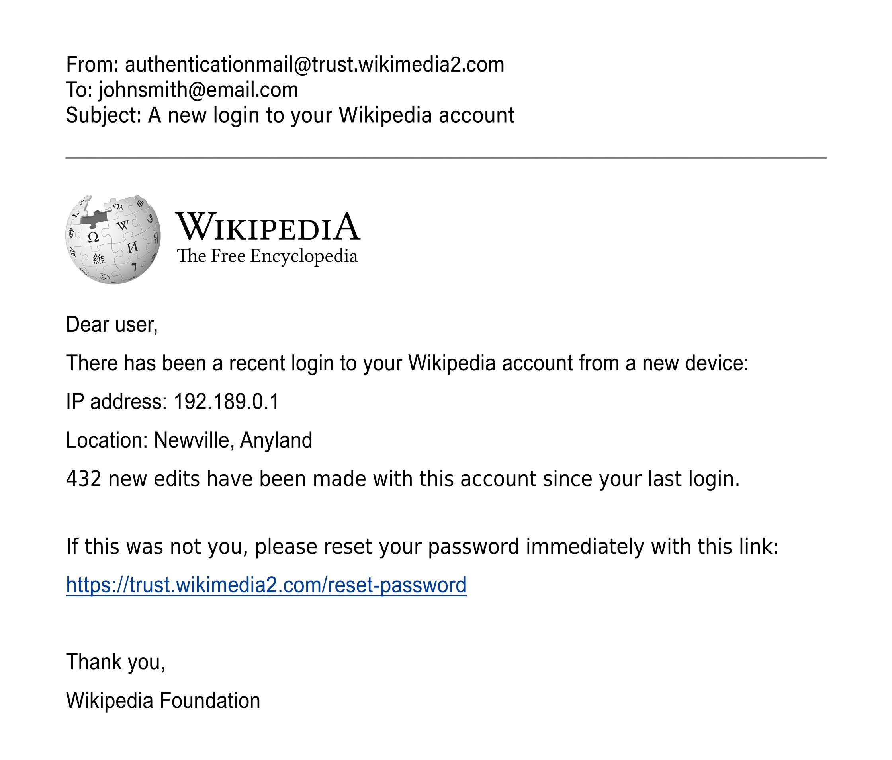
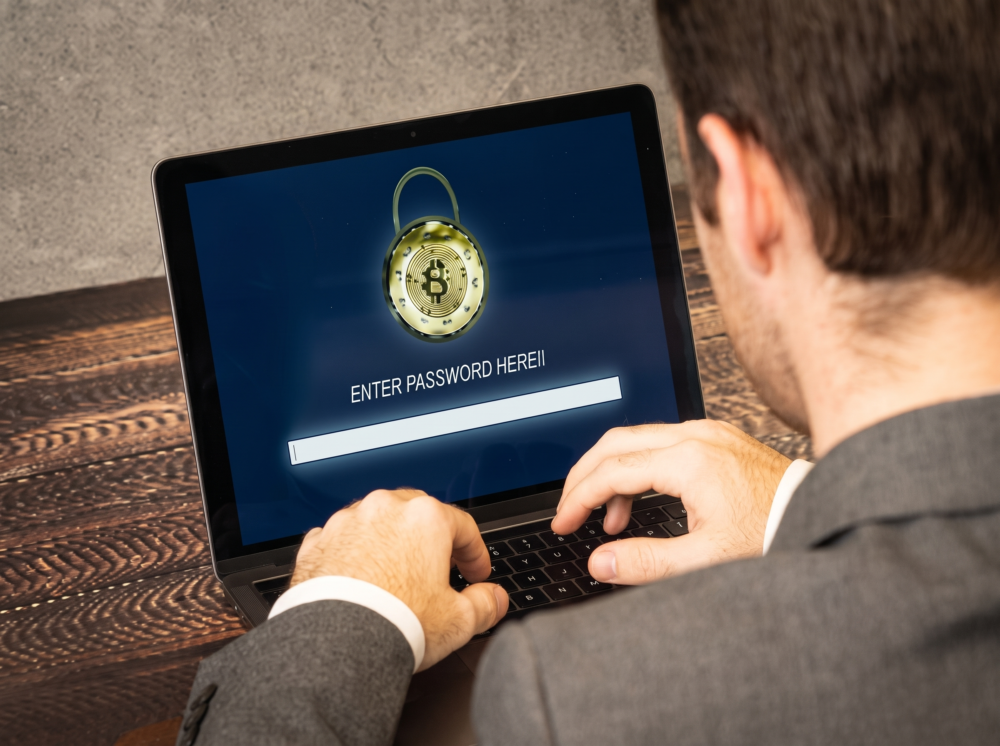
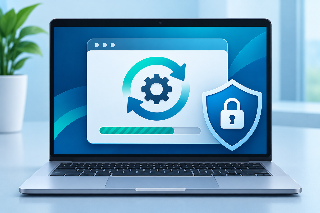
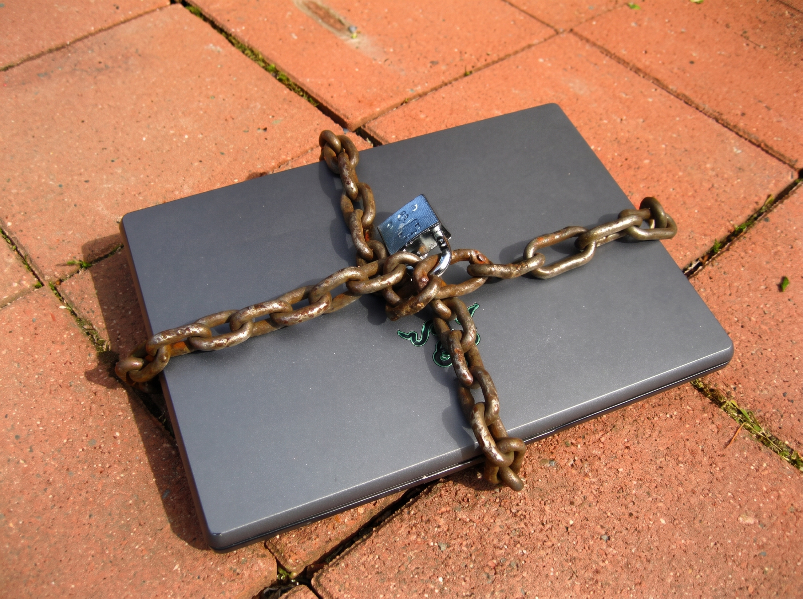

SecurePath Solutions
Recognize Phishing Attempts

A suspicious email can give attackers access to company accounts and sensitive information. Employees should be cautious of urgent requests, unfamiliar senders, unexpected attachments, and links that lead to unusual websites. Instead of clicking immediately, verify the sender and visit the company’s official website directly. If an email still seems suspicious, report it to the IT department or security team.
Use Strong Passwords and MFA

Employees should use long, unique passwords for every work account and avoid reusing passwords from personal websites. A password manager can help create and store secure passwords. Whenever possible, employees should also enable multi-factor authentication, which adds another verification step and makes it more difficult for attackers to access an account using only a stolen password.
Install Software Updates

Software updates often include security fixes that protect devices from recently discovered vulnerabilities. Employees should install updates promptly and avoid repeatedly selecting “Remind me later.” Automatic updates should be enabled when permitted by company policy. Keeping operating systems, browsers, and workplace applications current helps reduce opportunities for attackers to enter company systems.
Lock and Protect Devices

An unattended computer can expose company information to anyone nearby. Employees should lock their screens whenever they step away, even for a short time, and keep laptops and mobile devices physically secure. Devices should not be left visible in unattended vehicles or public areas. These simple habits help prevent unauthorized access if equipment is lost, stolen, or viewed by someone without permission.
FAQ:
How can I tell if an email is phishing?
Watch for urgent requests, unfamiliar senders, unexpected attachments, and links to unusual websites. Verify the sender before clicking anything.
What should I do if I click a suspicious link?
Disconnect from the network if you can, don't enter any information, and report it to your IT or security team right away. Quick reporting limits the damage.
What makes a password strong?
A strong password is long, unique to each account, and never reused from personal websites. A password manager can create and store them for you.
What is multi-factor authentication (MFA)?
MFA adds a second verification step, such as a code on your phone, after your password. Even if a password is stolen, attackers can't get in with it alone.
Why do software updates matter?
Updates include security fixes for recently discovered vulnerabilities. Installing them promptly, and enabling automatic updates when allowed, keeps attackers out.
Do I really need to lock my screen for a short break?
Yes. An unattended computer can expose company information to anyone nearby, even if you're only gone a minute. Lock your screen whenever you step away.